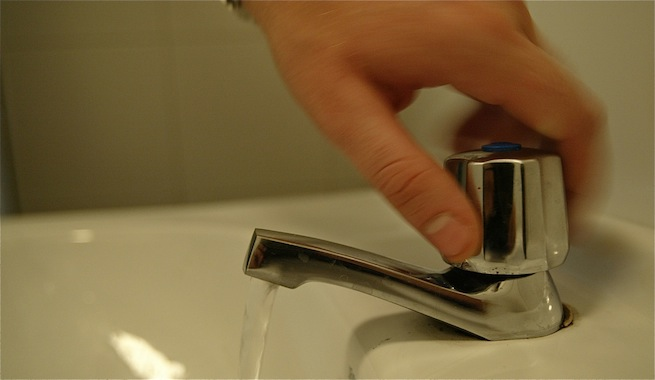
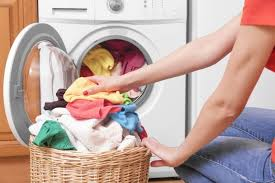
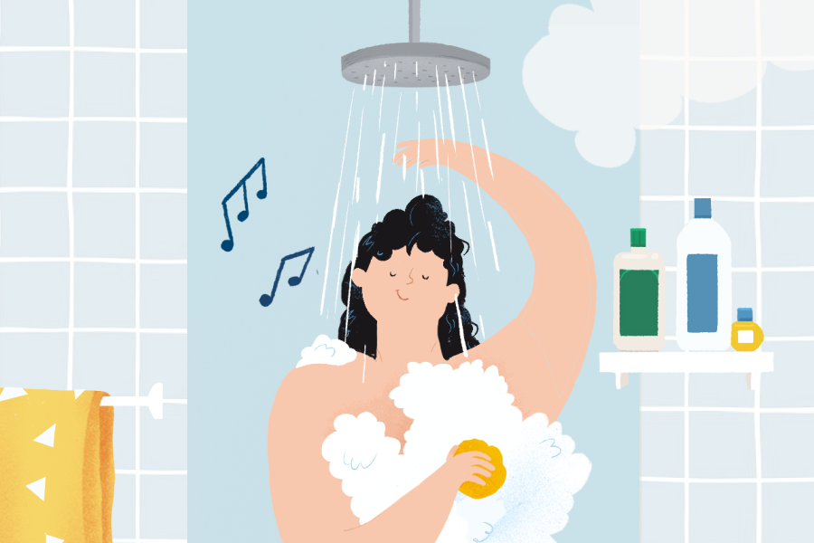
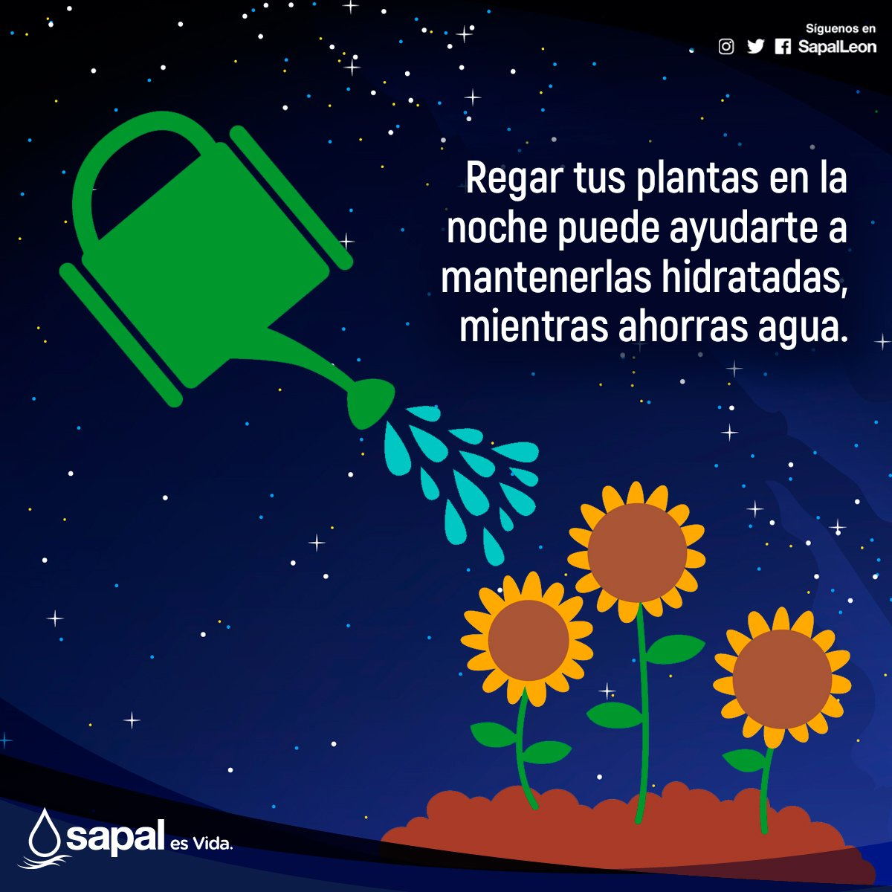
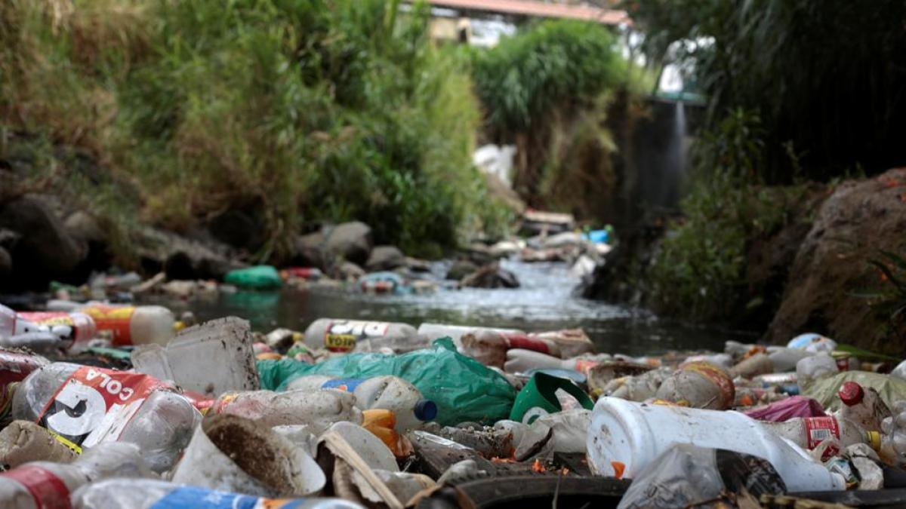

El recurso más importante del planeta
El cuerpo humano necesita agua para sobrevivir. Sin agua no podemos vivir más de 3 días.
Las plantas necesitan agua para crecer y hacer la fotosíntesis. Sin agua no habría vegetación.
Los cultivos dependen del agua para crecer. El riego es esencial para producir alimentos.
de la Tierra está cubierta de agua
del cuerpo humano es agua
de agua debe tomar una persona al día
es lo máximo que vivimos sin agua

Cerrar el grifo mientras te lavas los dientes
Usar lavadora y lavavajillas llenos
Ducharse en vez de bañarse en tina
Regar las plantas por la noche
No tirar basura en ríos ni lagos